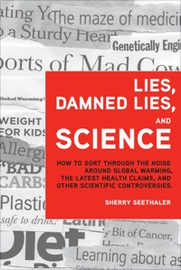

High school and even college science tends to be focused on facts, formulae, and experiments with known outcomes. In the real world, there is much more uncertainty and interpretation. Decisions about contemporary scientific issues often must be made on the basis of incomplete information, and conflicting viewpoints are the norm rather than the exception. This book unravels the complexity of such issues to help scientists and nonscientists alike identify hogwash and balance tradeoffs to make well-reasoned decisions about science in everyday life.
Lies, Damned Lies and Science is available from the publisher, FT Press, as well as Amazon and other booksellers. In addition to the English edition, it has been published in Korean, Polish and Spanish. See "Teaching Skeptical Inquiry" in CBE-Life Sciences Education (2012, Vol. 11, pp. 233-234) for a feature book review.
For instructors, examples of classroom activities that give students the opportunity to apply and practice the tools in the book.
Advertisers.
Politicians.
Lobbyists.
Self-proclaimed experts.
Social media.
News media.
Information and misinformation bombard us daily. Some purveyors of information are deliberately trying to mislead by presenting incorrect information, or by leaving out key facts. Others are repeating flawed information without knowing it is wrong. Still others are presenting accurate information in a way that is readily misinterpreted. Regardless of the intent behind the inaccuracy, it is up to the information consumer to beware. Yet, there exists more than a fine line between cynicism and skepticism.
Sound decisions are based on all the relevant information known to date, and they are made through careful costs-benefits analyses. Asking good questions is the starting point for gathering relevant information and correcting misinformation. It takes practice to learn to sort through the noise, but when one starts to carefully scrutinize claims, recurring themes emerge that can facilitate the reasoning process.